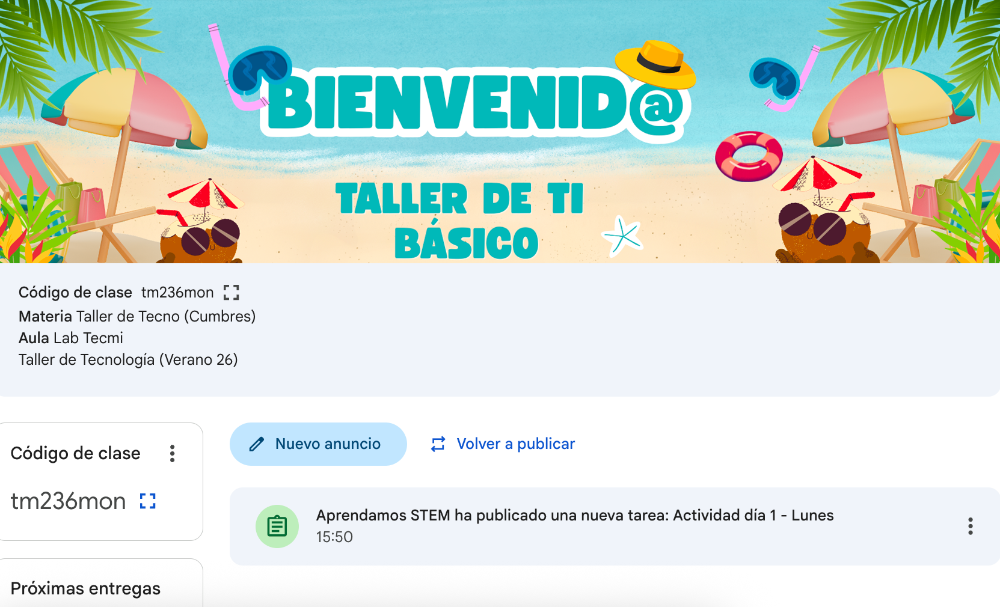
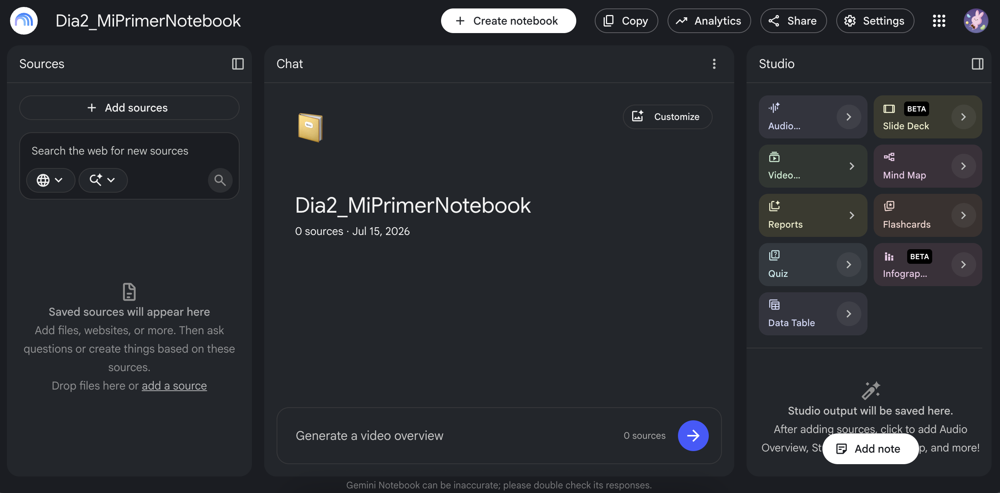
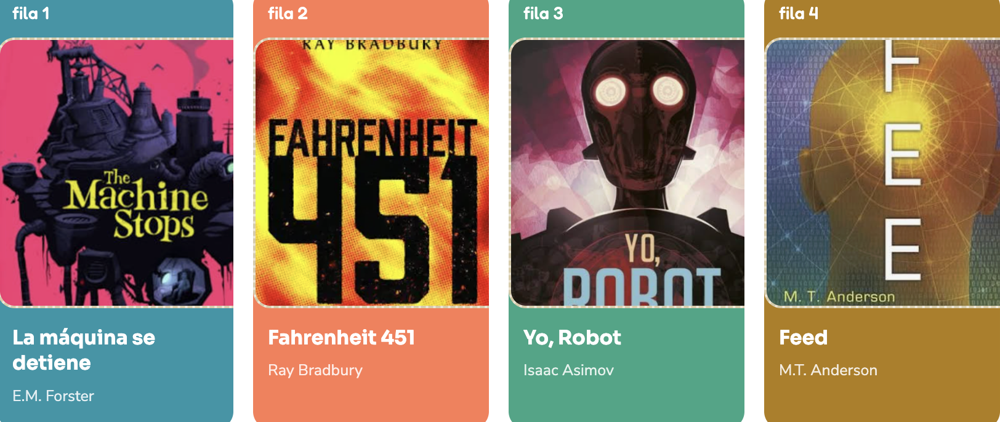

Solo se aceptan equipos de dos personas, si estás solo, la actividad es individual.
Recuerda: el viernes cada pareja presenta su Notebook con el libro que le tocó por fila. Todo lo que investiguen de hoy en adelante debe ir quedando dentro de ese mismo Notebook, para que llegue completo y ordenado al día de la exposición.
Este es el corazón de la herramienta que van a usar toda la semana. Al entrar van a ver tres columnas: Sources (a la izquierda), Chat (al centro), y Studio (a la derecha).

Aquí suben todo lo que quieren que Notebook "sepa": el texto del libro, un PDF, un artículo sobre el autor, o buscan directo en la web desde el mismo cuadro de búsqueda. Todo lo que suban se vuelve la memoria exclusiva de este Notebook.
Aquí hacen preguntas directas sobre sus fuentes: "¿cuál es el mensaje principal del autor?", "¿qué crítica hace sobre la tecnología?". Cada respuesta viene con una referencia exacta a qué parte del documento la sacó, así pueden verificarla antes de usarla en su exposición.
Aquí convierten su investigación en algo presentable. Elijan 2 o 3, no todo el resto del trabajo (guion, actuación, diseño final) debe ser de ustedes:
Resumen tipo "podcast", como si dos personas conversaran sobre el libro.
Resumen en formato video con narración, buena base para personalizar.
Reporte escrito y organizado, útil como borrador para el guion.
Propuesta inicial de diapositivas — punto de partida, no la exposición final.
Mapa mental de los temas y cómo se conectan entre sí.
Tarjetas de estudio con preguntas y respuestas cortas para repasar.
Examen corto de práctica para autoevaluarse.
Organiza la información en tablas o infografía visual.
Ya vieron que Notebook responde según lo que le suben, pero qué tan útil es la respuesta también depende de cómo le pregunten. Un buen prompt se arma combinando 4 partes:
| Parte | Qué responde | Ejemplo |
|---|---|---|
| Contexto | ¿Para qué lo necesito? | "Estoy preparando una exposición de 5 minutos para compañeros de mi edad" |
| Tarea | ¿Qué quiero exactamente? | "Dame los 3 mensajes principales del autor sobre tecnología" |
| Formato | ¿Cómo quiero la respuesta? | "En una lista corta, no en párrafos largos" |
| Tono | ¿Qué estilo quiero? | "En lenguaje sencillo, con un ejemplo de la vida real" |
Vamos a construir un buen prompt paso a paso, en vivo, usando un ejemplo que seguro les interesa: un artista o banda que les guste. Vamos a usar BTS.
La diferencia entre el paso 1 y el paso 5 es enorme, y esa comparación es el punto central del ejercicio: no es que Gemini "sepa más" en el paso 5, es que le dieron mejor información para trabajar.
Hagan este mismo ejercicio de 5 pasos, pero con su libro asignado en vez de BTS.
Individual. Elige uno de estos videojuegos:
Más allá del libro que les tocó, esta misma habilidad aplica en otras materias: resumir un texto largo, generar ideas para una tarea, o pedir que te expliquen un tema difícil paso a paso, siempre aplicando las 4 partes del prompt.

Cierre rápido: cada pareja comparte qué llevan en su Notebook hasta ahora, y qué van a investigar mañana para la actividad del libro que se presenta el día viernes.